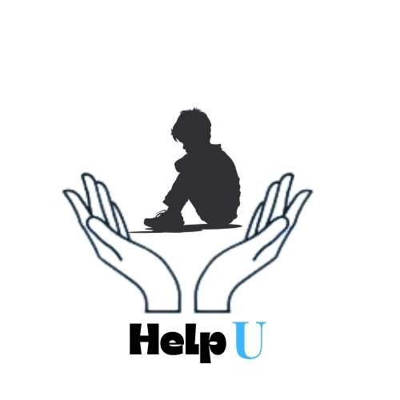

HelpU
About Us
Quiz
Therapy
Chat Room
Anonymous Story
Location
Mindset Check Quiz
1. How do you usually respond to failure?
A. I feel discouraged and tend to give up
B. I try to avoid situations where I might fail
C. I reflect and look for lessons
D. I see it as a necessary step to grow
2. When faced with a challenge, you usually...
A. Procrastinate or avoid it
B. Feel stressed or anxious
C. Break it down and work through it
D. Feel excited for the opportunity to learn
3. How do you react to criticism?
A. Take it personally and feel upset
B. Ignore it or avoid the person
C. Try to understand it
D. Use it to improve yourself
4. What is your view on intelligence or talent?
A. You're born with it, and it can't change
B. Some people just "have it"
C. You can develop it with effort
D. Effort and practice are more important than talent
5. When others succeed, how do you feel?
A. Envious or left behind
B. Indifferent
C. Curious about how they did it
D. Inspired and motivated
6. What do you tell yourself when you make a mistake?
A. “I’m not good enough”
B. “I always mess things up”
C. “It’s okay; everyone makes mistakes”
D. “This helps me learn and get better”
7. Do you believe people can change?
A. Not really, people are who they are
B. Maybe, but it’s rare
C. Yes, with effort and help
D. Definitely, change is always possible
8. faced with strong/overwhelming emotion:
I feel confused and overwhelmed
I try to calm myself but fail
I calm myself down
Everything feels hazy and my mind can't focus
9. Are you very self-critical?
Yes, I criticize myself and my actions daily
I rarely criticize myself
I am only critical for things I should be
I often criticize myself
10.Is it hard for you to get beyond long-past traumatic events or significant losses?
Yes, it affects me for years
Yes, it takes me months to recover
It affects me but spending time with my loved ones always helps me through it
It's hard but I get over it as time passes by
11. Is it easy for you to identify your emotion?
No, I feel confused
Yes, I can easily identify it
Some emotions feel harder to identify
Yes, most of the time
12. Can you express your emotion to others?
I can express it as naturally as breathing
Sometimes it's hard but I express it if needed
No, I always blank out when I try to
I try but other people are always dismissive
13. Is your mood stable?
Yes
No, it's highly unstable
I frequently get mood swings
I rarely get mood swings
Submit